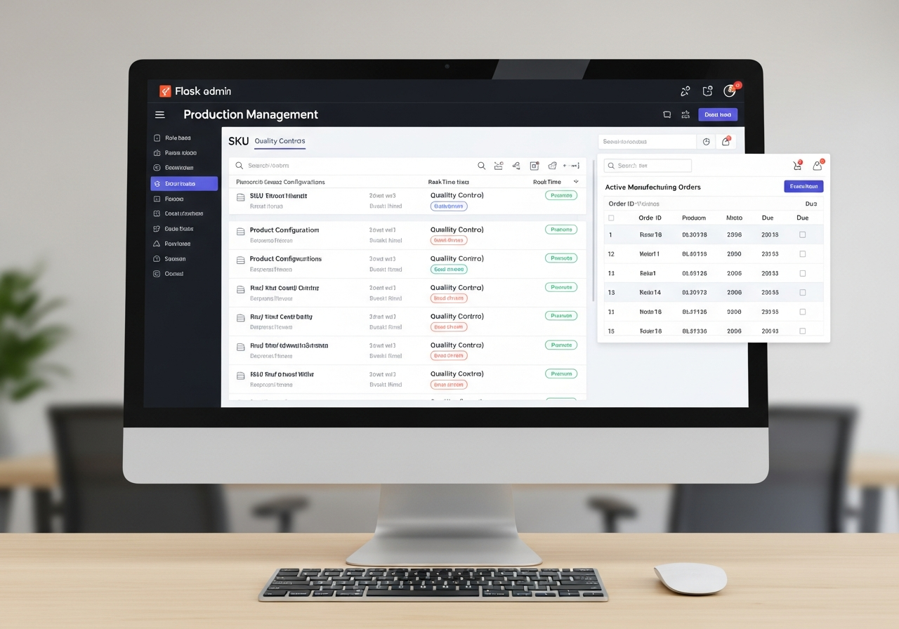
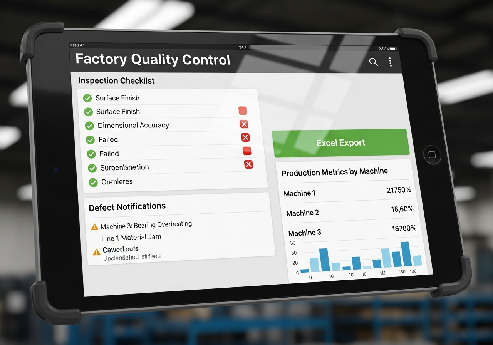
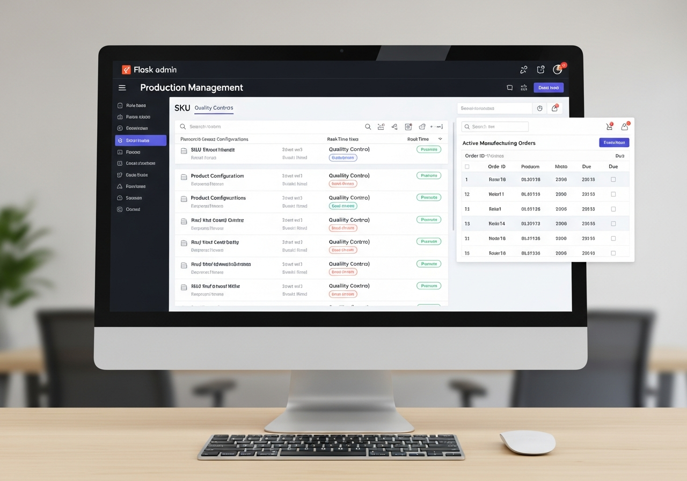
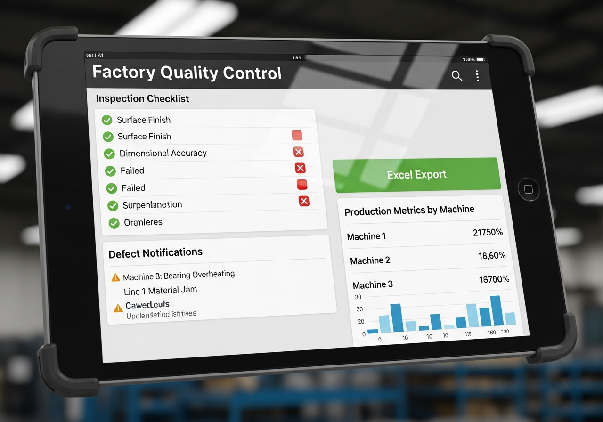

Voltar aos Produtos




Indústria 4.0
Sistema de Produção - Gerenciamento Industrial
A partir de
R$ 95,00 /mês
R$ 260,00 /trimestral
Descrição do Produto
Sistema completo de gerenciamento de produção desenvolvido com Flask para rastrear operações de fabricação, SKUs, configurações predefinidas e controle de qualidade. Solução profissional para gestão total da sua linha de produção.
Controle total sobre rastreamento de produção, gerenciamento de SKUs com predefinições para diferentes máquinas, notificações de controle de qualidade, exportação para Excel e sistema de feedback integrado. Desenvolvido com autenticação robusta e acesso baseado em funções para diferentes níveis de usuários.
Funcionalidades Principais:
- Autenticação de Usuários com Acesso Baseado em Funções
- Gestão de Perfis (Operadores, Gerentes, Controle de Qualidade)
- Rastreamento e Monitoramento de Produção em Tempo Real
- Gestão Completa de SKUs com Predefinições
- Configurações para Diferentes Máquinas (incluindo Máquina 4)
- Notificações de Controle de Qualidade Automatizadas
- Exportação de Dados para Excel
- Sistema de Feedback Integrado
- Persistência de Dados Baseada em Arquivos
- Servidor de Produção com Gunicorn (4 Workers)
Tecnologias Utilizadas:
- Backend: Flask 3.0.3 (Python)
- Python 3.10.15 (Produção) / 3.11 (Desenvolvimento)
- Pandas 2.0.3 para Análise de Dados
- OpenPyXL 3.1.2 para Exportação Excel
- Gunicorn 22.0.0 para Deploy em Produção
- Interface Web Responsiva com Templates HTML
- Arquitetura Modular com Múltiplos Módulos Python
- Pronto para Deploy (Procfile + runtime.txt)
Benefícios do Sistema
Gestão Industrial Completa
Controle total de operações de fabricação e produção
Acesso por Funções
Diferentes níveis de permissão para cada tipo de usuário
Controle de Qualidade
Notificações automáticas e rastreamento de QC
Exportação de Dados
Relatórios completos exportáveis para Excel
Gestão de SKUs
Gerenciamento completo com predefinições por máquina
Alta Performance
Gunicorn com 4 workers para máxima eficiência
Pronto para Otimizar sua Produção?
Entre em Contato AgoraResposta rápida • Suporte completo • Demonstração gratuita
Perguntas Frequentes
O sistema possui três níveis de acesso: Operadores (para registro de produção), Gerentes (com acesso a relatórios e configurações) e Controle de Qualidade (com permissões específicas para aprovação e notificações de QC).
O sistema permite configurar predefinições específicas para cada máquina, incluindo a Máquina 4 e outras. Essas predefinições incluem parâmetros de produção, SKUs compatíveis e configurações padrão para agilizar o processo de fabricação.
Sim! O sistema utiliza persistência de dados baseada em arquivos Python com estruturas de dicionário, garantindo integridade e segurança. Todos os dados são protegidos por autenticação de usuários e controle de acesso baseado em funções.
Sim! O sistema possui funcionalidade completa de exportação para Excel utilizando OpenPyXL e Pandas. Você pode gerar relatórios detalhados de produção, SKUs, controle de qualidade e muito mais em formato .xlsx pronto para análise.
Sim! O sistema já vem configurado com Gunicorn (4 workers) para deploy em produção, incluindo Procfile e runtime.txt para implantação em servidores como Render ou Heroku. Desenvolvido com Python 3.10.15 para máxima estabilidade.
O sistema possui um módulo dedicado de feedback (feedback.py) que permite aos usuários registrar observações, sugestões e problemas diretamente na plataforma. Gerentes podem revisar e responder aos feedbacks para melhoria contínua dos processos.